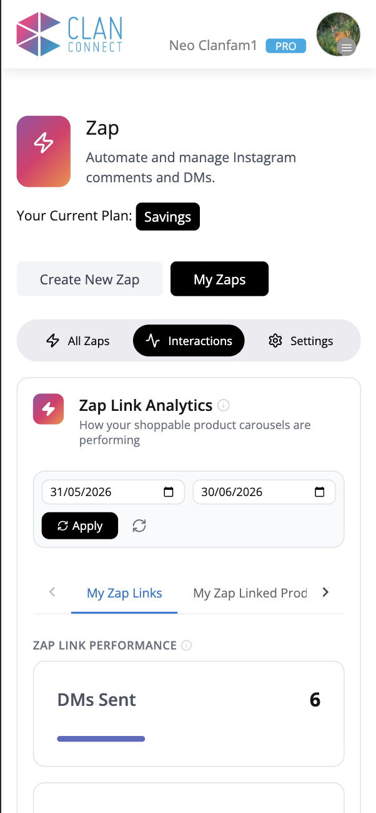
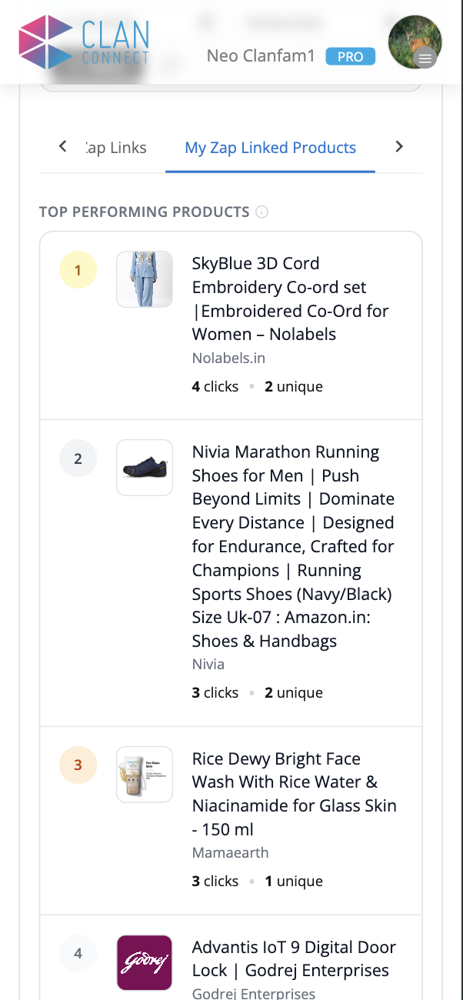
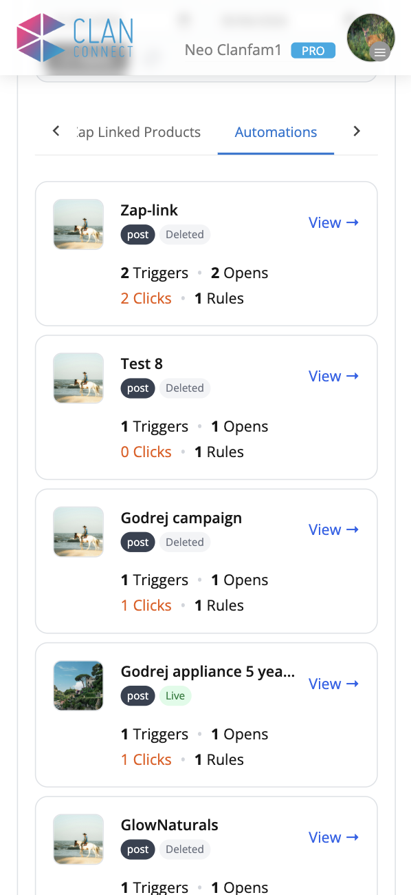
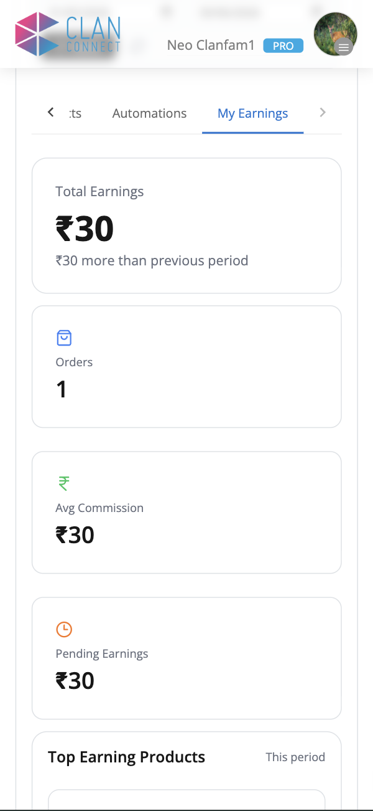
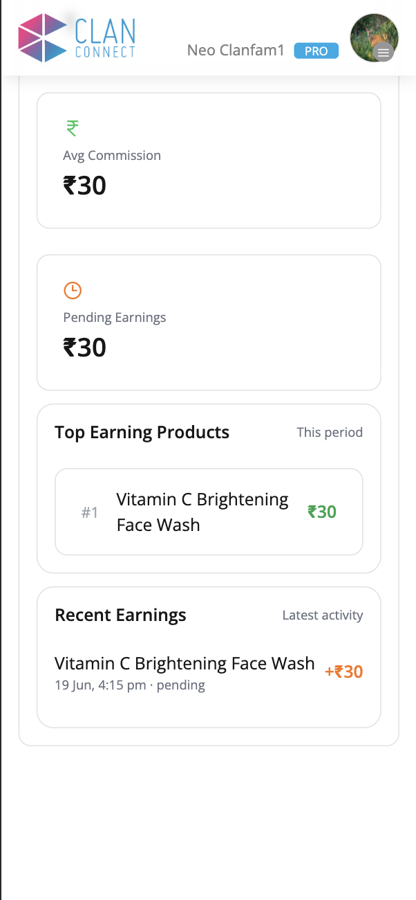
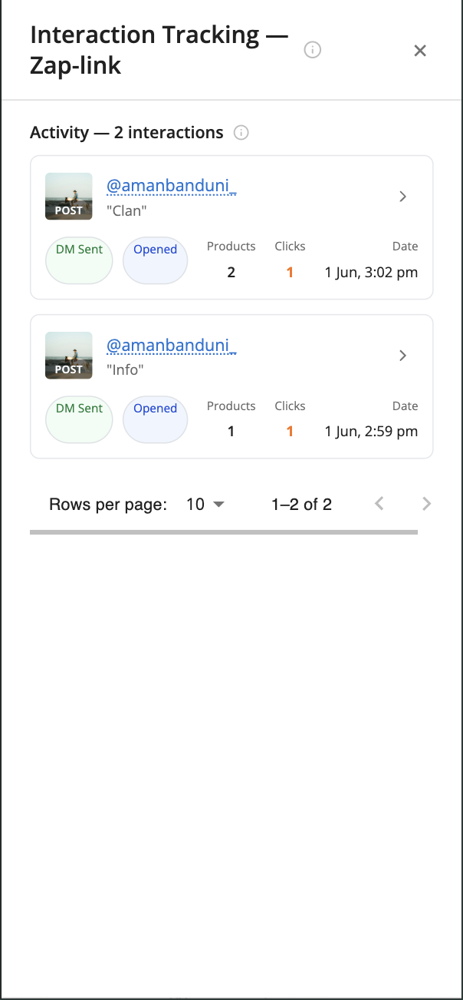
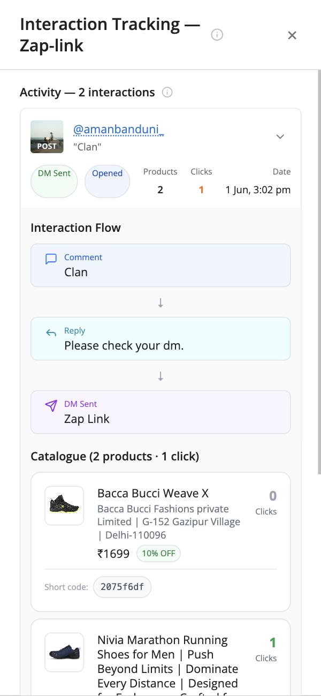

The whole dashboard at a glance
- 1Open Zap → My Zaps → Interactions.
- 2Set a date range and tap Apply.
- 3My Zap Links — the funnel: DMs Sent → Opened → Unique & Total Clicks.
- 4My Zap Linked Products — your top products by clicks.
- 5Automations — triggers, opens, clicks & rules per Zap.
- 6My Earnings — total, orders, commission, pending & top earners.
- 7Tap a Zap’s View → to open Interaction Tracking.
- 8Tap any interaction row to see its flow + full catalogue with clicks.
What Zap Link Analytics measures
Every Zap Link you send is tracked end-to-end. Analytics turns those events into a simple funnel so you can see exactly where people drop off — and which products win.
Your Zap sends a DM with a product carousel.
The follower opens the DM.
They tap a product — counted as a click (and a unique click per person).
Open the analytics panel
Analytics lives under the Interactions tab of My Zaps. Pick a start and end date, then tap Apply.

The controls
- Tap the Zap tab, then My Zaps.
- Switch to the Interactions sub-tab (next to All Zaps & Settings).
- Choose a start and end date.
- Tap Apply — the ↻ button reloads the current range.
My Zap Links — the funnel
Four cards summarise how your Zap Link auto-replies performed in the selected dates. Each card shows the total, a coloured bar, and the trend vs the previous period.
What each metric means
- DMs Sent — how many Zap Link DMs your automations delivered.
- DMs Opened — how many of those DMs the recipient opened.
- Unique Clicks — distinct people who tapped a product.
- Total Clicks — every product tap (one person can click many).
My Zap Linked Products
A ranked leaderboard of the products inside your Zap Links — ordered by clicks, so you instantly see what your audience wants.

Each row shows
- A rank badge (1, 2, 3 …) — the top three are highlighted.
- The product image, name and brand.
- Clicks — total taps on that product.
- Unique — how many different people tapped it.
Automations — per-Zap results
The same funnel, broken down for each automation you’ve created — including ones you’ve since deleted, so historical numbers never disappear.

On every automation card
- Thumbnail + name, a Live or Deleted badge and the media type (post).
- Triggers — how many times it fired.
- Opens — DMs opened.
- Clicks — product taps.
- Rules — number of keyword rules in that Zap.
My Earnings — money from your Zaps
When a Zap Link click turns into a sale, the commission shows up here — totals, orders and a breakdown of your best earners.


Interaction Tracking — Zap-link
Opening a Zap’s View → reveals the raw activity: one row per user interaction. Tap a row to see the exact message sent and the full product catalogue.

Each activity row shows
- The post thumbnail + the commenter’s @username and their comment (e.g. “Clan”).
- DM Sent and Opened status badges.
- Products — how many were in that send.
- Clicks — taps from that one interaction (orange when > 0).
- Date & time of the trigger.

Tap a row to expand
The row opens to reveal two parts:
- Interaction Flow — the journey: Comment → Reply → DM Sent, each with its exact text.
- Catalogue — every product sent, with image, brand, price, discount, the tracked Short code, and the clicks that product earned in this interaction.
2075f6df) is the product’s unique tracked link — it’s how
a tap gets attributed back to the right product and interaction.Metric glossary
| Metric | Means |
|---|---|
| DMs Sent | Zap Link DMs delivered in the period. |
| DMs Opened | Of those DMs, how many were opened. |
| Unique Clicks | Distinct people who tapped any product. |
| Total Clicks | All product taps (a person can click several). |
| % of prev | Trend vs the previous equal-length period. |
| Triggers | Times an automation fired. |
| Opens / Clicks / Rules | Per-automation opens, product taps, and keyword rules. |
| Short code | A product’s unique tracked link used for click attribution. |
| Pending Earnings | Commission confirmed but not yet paid. |